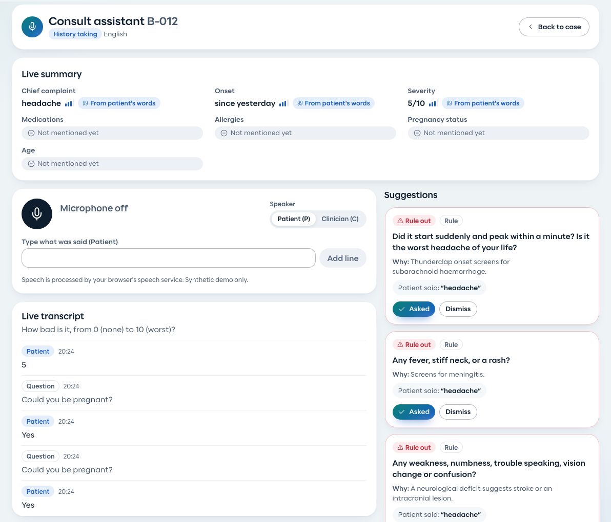
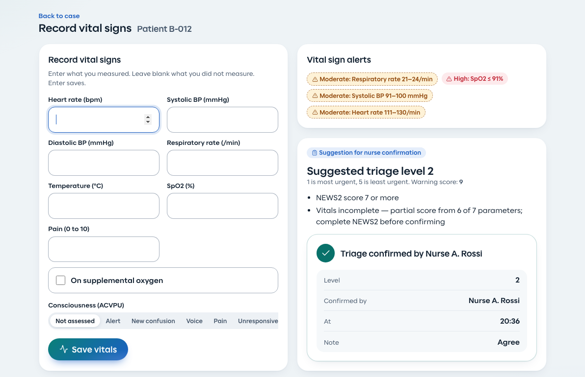
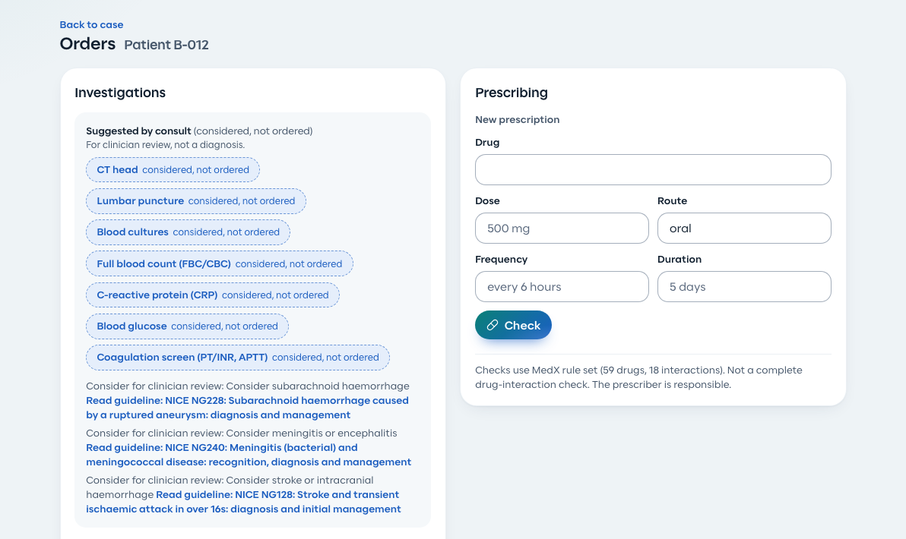
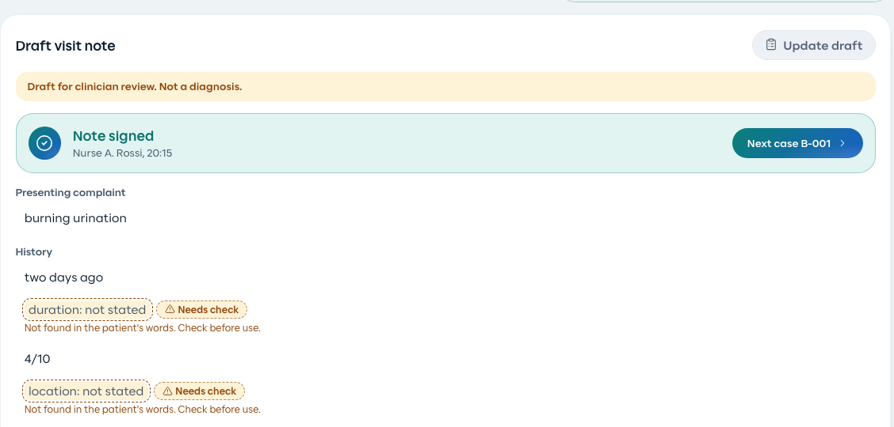
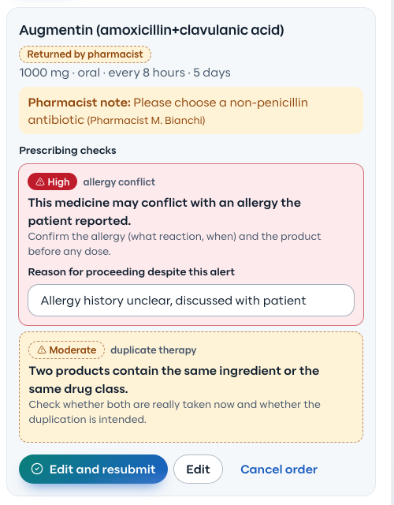
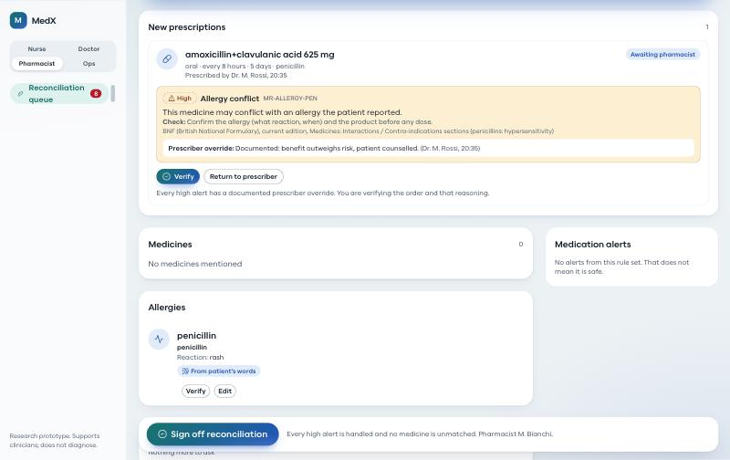
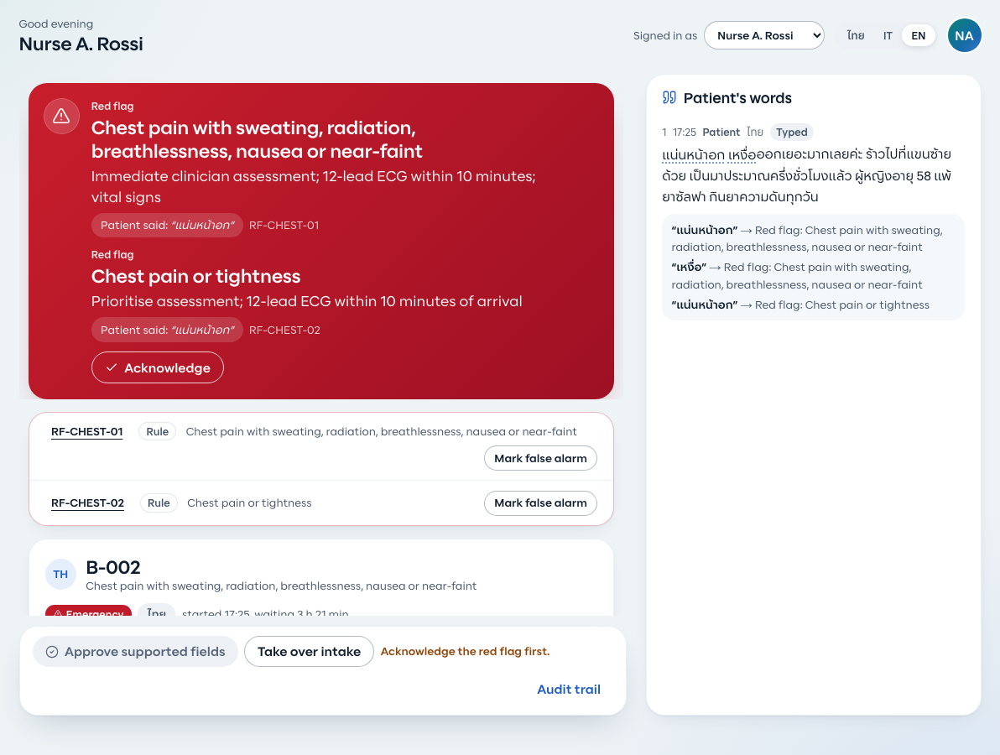

AMD Developer Hackathon ACT III · Track 2
MedX
One patient journey, from the first words to the pharmacy. Every field points back to the patient's own words.
Research prototype. Supports clinicians; does not diagnose, order, prescribe or decide triage.
Synthetic data only. github.com/KingPhuripol/medx-bridge


Meet Fin. Like a dolphin's echolocation, MedX hears what others miss, and stays a helper, never the decider.
2 / 10
A language gap and a wrong medicine list are both safety events
49.1% vs 29.5%
Physical harm in adverse events, limited-English patients vs English speakers, six US hospitals. Communication errors caused 52.4% vs 35.9%.1
13–59%
Patients with at least one unintended error in their admission medication list across six studies; omission was the commonest type.2
49.2% vs 27.0%
Doctor's day on EHR and desk work vs face time with the patient, four specialties.3
Thailand had 32.97 million foreign tourist arrivals in 2025.4 At the desk, the patient and the staff often do not share a language.
3 / 10
One patient journey, four people
1 Patient
Speaks or types in Thai, Italian or English. The patient checks the voice transcript before sending.
2 Nurse
History-taking with a consult assistant, vitals, and a triage suggestion the nurse confirms.
3 Doctor
Considerations for clinical judgement, a draft note to sign, and orders with automatic checks.
4 Pharmacist
Verifies or returns each prescription, and reconciles the medicines the patient named.
A clinic manager sees the queue, escalations and abstain rate. At every step a human decides; the AI never diagnoses, orders, prescribes or decides triage.


Left: the patient confirms what the voice agent heard. Right: the patient's phone shows when a nurse has read the answers.
4 / 10
Nurse: ask the next question, then confirm the triage

Left, consult assistant: it listens, keeps a live summary where each field links to the patient's words, and pops up "ask next" and "rule out" questions. Right, vitals: a NEWS2-based triage level is only a suggestion; the nurse confirms it.
5 / 10
Doctor: considerations, a draft note, orders with checks


Draft visit note: built from the patient's words; anything not found shows "Needs check". The doctor reviews and signs.
Next: orders. Prescriptions are checked by rules, not by the AI, and are shown on the next slide.
Considered, not ordered: workup ideas and guideline links appear for the doctor only, labelled "for clinician review, not a diagnosis". The AI never orders; the doctor does.
6 / 10
Prescribing checks, an override reason, a pharmacist loop


Doctor: rule-based checks (allergy, interaction, duplicate, pregnancy, dose range); a high alert needs a written reason.
Pharmacist: sees the alert and the doctor's reason, then verifies or returns the order with a note. Returned orders come back to the doctor to edit and resubmit.
7 / 10
Safety by design, in five answers
Wrong or unsupported answers
No verified quote means "needs check". Quotes must match the patient's words. Injection handling is not yet evaluated end to end.
Sensitive information
Pattern-based redaction before storage or any model call; imperfect. Synthetic data only. Keys stay server-side.
Uncertain results
Confidence on every field. Low confidence or provider failure: abstain, "needs human review".
High-risk decisions
Red-flag rules run before any model. The Gemma screen is add-only: "model-suggested, confirm". Triage and orders are confirmed by people.
Human review
Nothing is final until a clinician approves. Overrides need a reason. Every action is in the audit log.

Thai patient, chest pain and sweating in the first message: the nurse screen is interrupted and the patient's sentence is highlighted. The patient's phone shows a calm "go to the desk now" screen.
8 / 10
Evidence we can show, and the gap that motivated the screen
| What | Count | Where |
|---|
| Synthetic cases (40 intake + 12 medication) | 52 | data/cases |
| Blind holdout cases, written without seeing the rules | 18 | data/holdout |
| Red-flag rules / reference tests | 18 / 175 | docs/clinical |
| Drugs in dictionary / reference tests | 59 / 194 | docs/clinical |
| Automated tests, all passing | 1,382 | apps/web, vitest |
Small synthetic blind holdout (18 cases), keyword rules alone
7 of 10
emergencies escalated; 3 of 8 non-emergencies raised a false alarm. Misses were lay wording keyword lists cannot cover. That is why Gemma adds a safety screen.
Designed to run Gemma on AMD via the hackathon's AMD Token Factory (OpenAI-compatible). Until the endpoint is connected, current results use a mock model.
With Gemma via AMD Token Factory
Holdout recall [pending AMD run]
Precision [pending AMD run]
Latency p50 / p95 [pending AMD run]
9 / 10
Business case: who buys, and why
Buyer: private hospitals and clinics with international patients, and clinics in tourist areas (Thailand had 32.97M foreign arrivals in 20251).
CEO / CFO
Interpreter cost and patient throughput at the front desk.
Head nurse
Documentation time: nurses spent 20.9% to 28.1% of a shift documenting in one observed study.
2Doctors
AI they can verify: each field links to the patient's sentence; nothing is final until the doctor signs.
Quality and risk team
Medication errors: 13% to 59% of patients had an admission-list error across six studies.
3
ThroughputOne structured intake in the clinician's language.
SafetyRed flags, prescribing checks, pharmacist loop, audit log.
TrustEvidence-linked fields, honest abstain and "needs check".
Next step: pilotOne clinic, measured before and after. ROI figures to come from the pilot, not from this deck.
10 / 10
Next: prove it with clinicians before anyone relies on it
- Run the pre-declared evaluation on Gemma via AMD Token Factory and publish every result, including misses.
- Native-speaker review of Thai and Italian text.
- A timed pilot with nurses, doctors and pharmacists, then ethics approval before any real data.
- Not a medical device. Supports clinicians; never diagnoses, orders, prescribes or decides triage.
Open source, MIT.
github.com/KingPhuripol/medx-bridge
Team MedX. Built by a human lead orchestrating Claude (Opus/Sonnet) and OpenAI Codex agents in role-based lanes.
Fin hears what others miss.
The people decide.